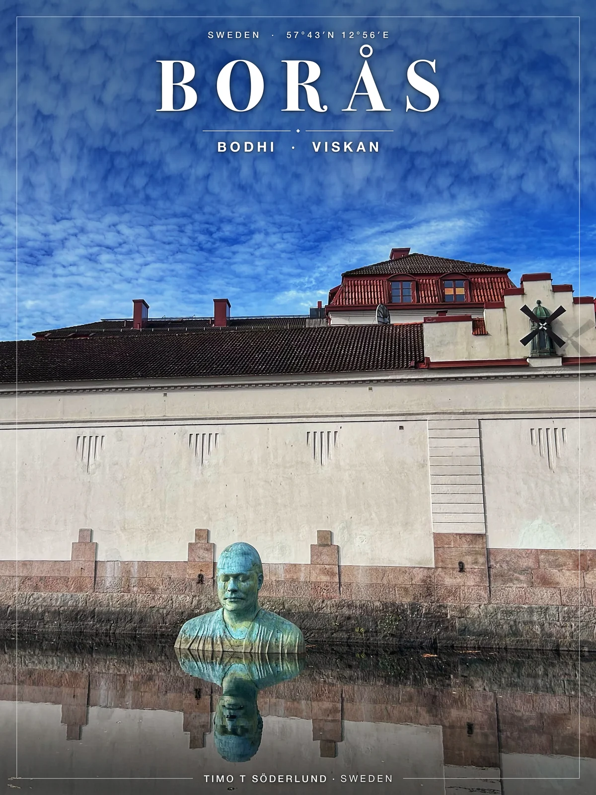

Bodhi · Viskan (Reflection)
Bodhi Sculpture · Viskan River, Borås, Sweden
English
In crisp daylight along the Viskan river in central Borås, Sweden, Fredrik Wretman's verdigris bronze sculpture Bodhi meets its mirror image on the calm water surface. Framed against historic stone walls, red-tiled rooftops, and sweeping blue sky clouds, this edition of Borås Poster Project 2026 by Timo T Söderlund captures a sharp, contemplative moment in the heart of Boras, Sweden.
Svenska
I klart dagsljus längs Viskan i centrala Borås möter Fredrik Wretmans ärgade bronsskulptur Bodhi sin egen spegelbild i det stilla vattnet. Inramad av historiska stenmurar, tegeltak och blå himmel med lätta moln fångar denna utgåva i Borås Poster Project 2026 av Timo T Söderlund ett skarpt och rofyllt ögonblick mitt i Borås.
Photographer & Edition: Timo T Söderlund · Borås, Sweden (2026)